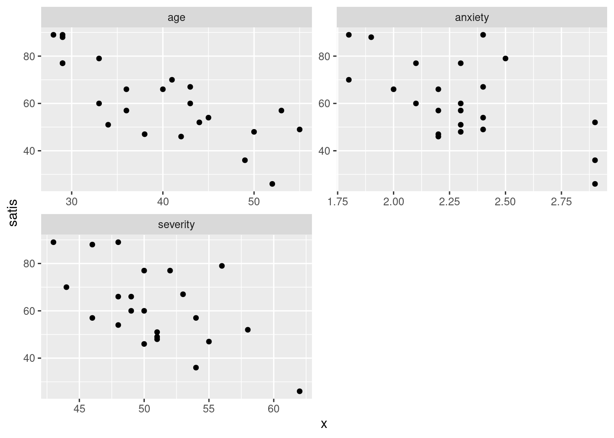
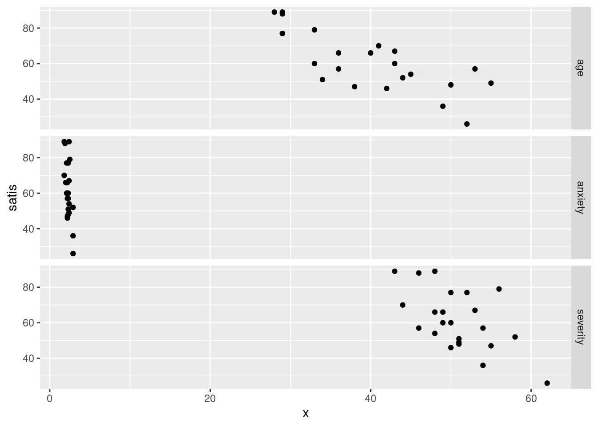
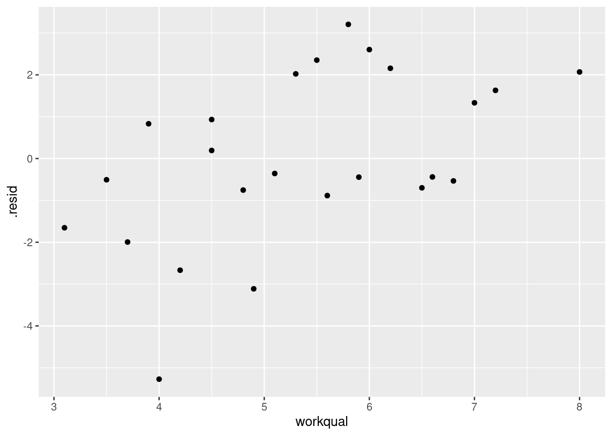
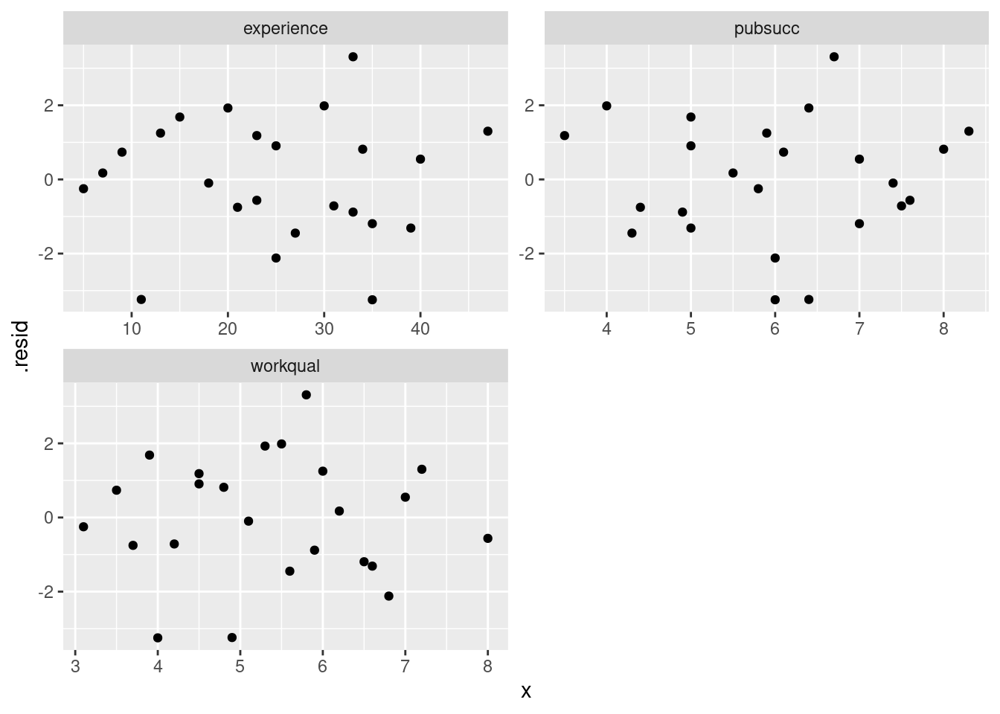
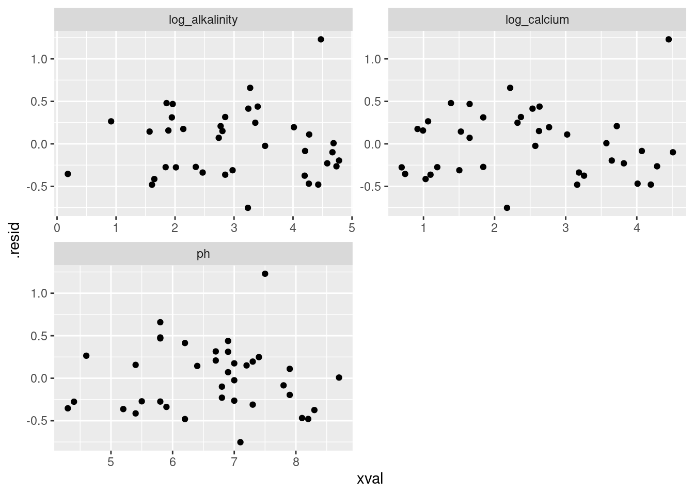
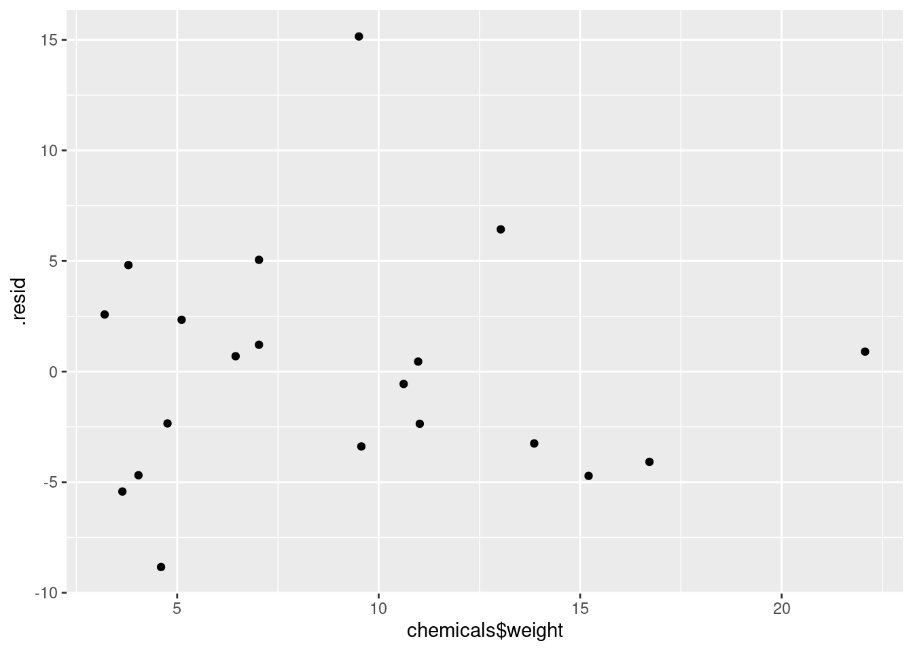

library(tidyverse)19 Multiple regression
19.1 Being satisfied with hospital
A hospital administrator collects data to study the effect, if any, of a patient’s age, the severity of their illness, and their anxiety level, on the patient’s satisfaction with their hospital experience. The data, in the file link, are for 46 patients in a survey. The columns are: patient’s satisfaction score satis, on a scale of 0 to 100; the patient’s age (in years), the severity of the patient’s illness (also on a 0–100 scale), and the patient’s anxiety score on a standard anxiety test (scale of 0–5). Higher scores mean greater satisfaction, increased severity of illness and more anxiety.
Read in the data and check that you have four columns in your data frame, one for each of your variables.
* Obtain scatterplots of the response variable
satisagainst each of the other variables.In your scatterplots of (here), which relationship appears to be the strongest one?
* Create a correlation matrix for all four variables. Does your strongest trend of the previous part have the strongest correlation?
Run a regression predicting satisfaction from the other three variables, and display the output.
Does the regression fit well overall? How can you tell?
Test the null hypothesis that none of your explanatory variables help, against the alternative that one or more of them do. (You’ll need an appropriate P-value. Which one is it?) What do you conclude?
The correlation between
severityandsatisis not small, but in my regression I found thatseveritywas nowhere near significant. Why is this? Explain briefly.Carry out a backward elimination to determine which of
age,severityandanxietyare needed to predict satisfaction. What do you get? Use \(\alpha = 0.10\).
19.2 Salaries of mathematicians
A researcher in a scientific foundation wanted to evaluate the relationship between annual salaries of mathematicians and three explanatory variables:
an index of work quality
number of years of experience
an index of publication success.
The data can be found at link. Data from only a relatively small number of mathematicians were available.
Read in the data and check that you have a sensible number of rows and the right number of columns. (What does “a sensible number of rows” mean here?)
Make scatterplots of
salaryagainst each of the three explanatory variables. If you can, do this with oneggplot.Comment briefly on the direction and strength of each relationship with
salary.* Fit a regression predicting salary from the other three variables, and obtain a
summaryof the results.How can we justify the statement “one or more of the explanatory variables helps to predict salary”? How is this consistent with the value of R-squared?
Would you consider removing any of the variables from this regression? Why, or why not?
Do you think it would be a mistake to take both of
workqualandpubsuccout of the regression? Do a suitable test. Was your guess right?Back in part (here), you fitted a regression with all three explanatory variables. By making suitable plots, assess whether there is any evidence that (i) that the linear model should be a curve, (ii) that the residuals are not normally distributed, (iii) that there is “fan-out”, where the residuals are getting bigger in size as the fitted values get bigger? Explain briefly how you came to your conclusions in each case.
19.3 Predicting GPA of computer science students
The file link contains some measurements of academic achievement for a number of university students studying computer science:
High school grade point average
Math SAT score
Verbal SAT score
Computer Science grade point average
Overall university grade point average.
Read in the data and display it (or at least the first ten lines).
* Make a scatterplot of high school GPA against university GPA. Which variable should be the response and which explanatory? Explain briefly. Add a smooth trend to your plot.
Describe any relationship on your scatterplot: its direction, its strength and its shape. Justify your description briefly.
* Fit a linear regression for predicting university GPA from high-school GPA and display the results.
Two students have been admitted to university. One has a high school GPA of 3.0 and the other a high school GPA of
3.5. Obtain suitable intervals that summarize the GPAs that each of these two students might obtain in university.* Now obtain a regression predicting university GPA from high-school GPA as well as the two SAT scores. Display your results.
Test whether adding the two SAT scores has improved the prediction of university GPA. What do you conclude?
Carry out a backward elimination starting out from your model in part (here). Which model do you end up with? Is it the same model as you fit in (here)?
These students were studying computer science at university. Do you find your backward-elimination result sensible or surprising, given this? Explain briefly.
19.4 Fish and mercury
Eating fish is generally healthy, but sometimes the fish is contaminated with mercury. What might affect the amount of mercury in a fish? Large-mouth bass were studied in Florida lakes to examine factors that might affect the amount of mercury contamination. 38 lakes were used for the study. Water samples were taken from each lake and analyzed. Also, samples of fish were caught in each lake and the mercury concentration in their muscle tissue was measured. The resulting data are in http://ritsokiguess.site/datafiles/mercury.txt, separated by single spaces. The variables measured were as follows:
- standardized mercury level (parts per million in 3-year-old fish)
- alkalinity of water (milligrams per litre)
- calcium level of water (milligrams per litre)
- pH of water (standard scale; see eg. this)
Read in and display (some of) the data.
Plot the mercury levels against each of the explanatory variables.
Describe any trends (or lack thereof) that you see on your graphs.
Concerned by some of what you see on your plots, you consult with a fisheries scientist, who says that using the logs of
alkalinityandcalciumare often used in modelling this kind of data. Add columns containing the logs of these two variables to your dataframe, and run a regression predictingmercuryfromphand the two new variables. Display the output from your regression.What might you learn from running Box-Cox here? Explain briefly, then run it (on the same variables as your regression above) and describe what the results tell you.
Using the results of the Box-Cox procedure and your previous work in the question, what seems to be the most appropriate regression now? Fit it, and display the results.
Obtain all the standard residual plots (the ones we have seen in this course) for this model. Describe any problems you see.
19.5 Handling shipments of chemicals
The data in link are on shipments of chemicals in drums that arrive at a warehouse. In order, the variables are:
the number of drums in the shipment
the total weight of the shipment, in hundreds of pounds.
the number of minutes required to handle the shipment (response).
The data set has two features: no column names, and data aligned in columns (that is, more than one space between data values). Read the data in, giving the columns suitable names. To do this, you may have to consult an appropriate help file, or do some searching.
Fit a regression predicting the number of minutes required to handle a shipment from the other two variables. Display the results.
Explain carefully but briefly what the slope coefficients for the two explanatory variables represent. Do their signs (positive or negative) make practical sense in the context of handling shipments of chemicals?
Obtain plots of residuals against fitted values, residuals against explanatory variables, and a normal quantile plot of the residuals.
Do you have any concerns, looking at the residual plots? Explain briefly.
My solutions follow:
19.6 Being satisfied with hospital
A hospital administrator collects data to study the effect, if any, of a patient’s age, the severity of their illness, and their anxiety level, on the patient’s satisfaction with their hospital experience. The data, in the file link, are for 46 patients in a survey. The columns are: patient’s satisfaction score satis, on a scale of 0 to 100; the patient’s age (in years), the severity of the patient’s illness (also on a 0–100 scale), and the patient’s anxiety score on a standard anxiety test (scale of 0–5). Higher scores mean greater satisfaction, increased severity of illness and more anxiety.
- Read in the data and check that you have four columns in your data frame, one for each of your variables.
Solution
This one requires a little thought first. The data values are aligned in columns, and so are the column headers. Thus, read_table is what we need:
my_url <- "http://ritsokiguess.site/datafiles/satisfaction.txt"
satisf <- read_table(my_url)
── Column specification ────────────────────────────────────────────────────────
cols(
satis = col_double(),
age = col_double(),
severity = col_double(),
anxiety = col_double()
)satisf46 rows and 4 columns: satisfaction score (response), age, severity and anxiety (explanatory).
There is a small question about what to call the data frame. Basically, anything other than satis will do, since there will be confusion if your data frame has the same name as one of its columns.
\(\blacksquare\)
- * Obtain scatterplots of the response variable
satisagainst each of the other variables.
Solution
The obvious way is to do these one after the other:
ggplot(satisf, aes(x = age, y = satis)) + geom_point()
ggplot(satisf, aes(x = severity, y = satis)) + geom_point()
ggplot(satisf, aes(x = anxiety, y = satis)) + geom_point()
This is fine, but there is also a way of getting all three plots with one ggplot. This uses the facet_wrap trick, but to set that up, we have to have all the \(x\)-variables in one column, with an extra column labelling which \(x\)-variable that value was. This uses pivot_longer. The right way to do this is in a pipeline:
satisf %>%
pivot_longer(-satis, names_to="xname", values_to="x") %>%
ggplot(aes(x = x, y = satis)) + geom_point() +
facet_wrap(~xname, scales = "free", ncol = 2)
Steps: collect together the columns age through anxiety into one column whose values go in x, with names in xname, then plot this new x against satisfaction score, with a separate facet for each different \(x\) (in xname).
What’s the difference between facet_grid and facet_wrap? The difference is that with facet_wrap, we are letting ggplot arrange the facets how it wants to. In this case, we didn’t care which explanatory variable went on which facet, just as long as we saw all of them somewhere. Inside facet_wrap there are no dots: a squiggle, followed by the name(s) of the variable(s) that distinguish(es) the facets.1 The only “design” decision I made here was that the facets should be arranged somehow in two columns, but I didn’t care which ones should be where.
In facet_grid, you have a variable that you want to be displayed in rows or in columns (not just in “different facets”). I’ll show you how that works here. Since I am going to draw two plots, I should save the long data frame first and re-use it, rather than calculating it twice (so that I ought now to go back and do the other one using the saved data frame, really):
satisf %>%
pivot_longer(age:anxiety, names_to="xname",
values_to="x") -> satisf.long
satisf.longIf, at this or any stage, you get confused, the way to un-confuse yourself is to fire up R Studio and do this yourself. You have all the data and code you need. If you do it yourself, you can run pipes one line at a time, inspect things, and so on.
First, making a row of plots, so that xname is the \(x\) of the facets:
ggplot(satisf.long, aes(x = x, y = satis)) + geom_point() +
facet_grid(. ~ xname, scales = "free")
I find these too tall and skinny to see the trends, as on the first facet_wrap plot.
And now, making a column of plots, with xname as \(y\):
ggplot(satisf.long, aes(x = x, y = satis)) + geom_point() +
facet_grid(xname ~ ., scales = "free")
This one looks weird because the three \(x\)-variables are on different scales. The effect of the scales="free" is to allow the satis scale to vary, but the x scale cannot because the facets are all in a line. Compare this:
ggplot(satisf.long, aes(x = x, y = satis)) + geom_point() +
facet_wrap(~xname, ncol = 1, scales = "free")
This time, the \(x\) scales came out different (and suitable), but I still like squarer plots better for judging relationships.
\(\blacksquare\)
- In your scatterplots of (here), which relationship appears to be the strongest one?
Solution
All the trends appear to be downward ones, but I think satis and age is the strongest trend. The other ones look more scattered to me.
\(\blacksquare\)
- * Create a correlation matrix for all four variables. Does your strongest trend of the previous part have the strongest correlation?
Solution
This is a matter of running the whole data frame through cor:
cor(satisf) satis age severity anxiety
satis 1.0000000 -0.7736828 -0.5874444 -0.6023105
age -0.7736828 1.0000000 0.4666091 0.4976945
severity -0.5874444 0.4666091 1.0000000 0.7945275
anxiety -0.6023105 0.4976945 0.7945275 1.0000000Ignoring the correlations of variables with themselves, the correlation of satisf with age, the one I picked out, is the strongest (the most negative trend). If you picked one of the other trends as the strongest, you need to note how close it is to the maximum correlation: for example, if you picked satis and severity, that’s the second highest correlation (in size).
\(\blacksquare\)
- Run a regression predicting satisfaction from the other three variables, and display the output.
Solution
satisf.1 <- lm(satis ~ age + severity + anxiety, data = satisf)
summary(satisf.1)
Call:
lm(formula = satis ~ age + severity + anxiety, data = satisf)
Residuals:
Min 1Q Median 3Q Max
-16.954 -7.154 1.550 6.599 14.888
Coefficients:
Estimate Std. Error t value Pr(>|t|)
(Intercept) 162.8759 25.7757 6.319 4.59e-06 ***
age -1.2103 0.3015 -4.015 0.00074 ***
severity -0.6659 0.8210 -0.811 0.42736
anxiety -8.6130 12.2413 -0.704 0.49021
---
Signif. codes: 0 '***' 0.001 '**' 0.01 '*' 0.05 '.' 0.1 ' ' 1
Residual standard error: 10.29 on 19 degrees of freedom
Multiple R-squared: 0.6727, Adjusted R-squared: 0.621
F-statistic: 13.01 on 3 and 19 DF, p-value: 7.482e-05\(\blacksquare\)
- Does the regression fit well overall? How can you tell?
Solution
For this, look at R-squared, which is 0.682 (68.2%). This is one of those things to have an opinion about. I’d say this is good but not great. I would not call it “poor”, since there definitely is a relationship, even if it’s not a stupendously good one.
\(\blacksquare\)
- Test the null hypothesis that none of your explanatory variables help, against the alternative that one or more of them do. (You’ll need an appropriate P-value. Which one is it?) What do you conclude?
Solution
This one is the (global) \(F\)-test, whose P-value is at the bottom. It translates to 0.000000000154, so this is definitely small, and we reject the null. Thus, one or more of age, severity and anxiety helps to predict satisfaction. (I would like to see this last sentence, rather than just “reject the null”.)
\(\blacksquare\)
- The correlation between
severityandsatisis not small, but in my regression I found thatseveritywas nowhere near significant. Why is this? Explain briefly.
Solution
The key thing to observe is that the \(t\)-test in the regression says how important a variable is given the others that are already in the regression, or, if you prefer, how much that variable adds to the regression, on top of the ones that are already there. So here, we are saying that severity has nothing to add, given that the regression already includes the others. (That is, high correlation and strong significance don’t always go together.) For a little more insight, look at the correlation matrix of (here) again. The strongest trend with satis is with age, and indeed age is the one obviously significant variable in the regression. The trend of severity with satis is somewhat downward, and you might otherwise have guessed that this is strong enough to be significant. But see that severity also has a clear relationship with age. A patient with low severity of disease is probably also younger, and we know that younger patients are likely to be more satisfied. Thus severity has nothing (much) to add.
Extra 1: The multiple regression is actually doing something clever here. Just looking at the correlations, it appears that all three variables are helpful, but the regression is saying that once you have looked at age (“controlled for age”), severity of illness does not have an impact: the correlation of severity with satis is as big as it is almost entirely because of age. This gets into the domain of “partial correlation”. If you like videos, you can see link for this. I prefer regression, myself, since I find it clearer. anxiety tells a different story: this is close to significant (or is significant at the \(\alpha=0.10\) level), so the regression is saying that anxiety does appear to have something to say about satis over and above age. This is rather odd, to my mind, since anxiety has only a slightly stronger correlation with satis and about the same with age as severity does. But the regression is telling the story to believe, because it handles all the inter-correlations, not just the ones between pairs of variables.
I thought it would be rather interesting to do some predictions here. Let’s predict satisfaction for all combinations of high and low age, severity and anxiety. I’ll use the quartiles for high and low.
The easiest way to get those is via summary:
summary(satisf) satis age severity anxiety
Min. :26.00 Min. :28.00 Min. :43.00 Min. :1.800
1st Qu.:50.00 1st Qu.:33.00 1st Qu.:48.00 1st Qu.:2.150
Median :60.00 Median :40.00 Median :50.00 Median :2.300
Mean :61.35 Mean :39.61 Mean :50.78 Mean :2.296
3rd Qu.:73.50 3rd Qu.:44.50 3rd Qu.:53.50 3rd Qu.:2.400
Max. :89.00 Max. :55.00 Max. :62.00 Max. :2.900 and then use datagrid to make combinations for prediction:
new <- datagrid(model = satisf.1, age = c(33, 44.5),
severity = c(48, 53.5), anxiety = c(2.15, 2.4))
newEight rows for the \(2^3 = 8\) combinations. Then get the predictions for these:
cbind(predictions(satisf.1, newdata = new))Extra 2: the standard errors vary quite a bit. The smallest ones are where age, severity, and anxiety are all high or all low (the last row and the first one). This is where most of the data is, because the three explanatory variables are positively correlated with each other (if you know that one of them is high, the others will probably be high too). The other standard errors are higher because there is not much data “nearby”, and so we don’t know as much about the quality of the predictions there.
Extra 3: we had to copy the quartile values into the new dataframe we were making (to predict from), which ought to have caused you some concern, since there was no guarantee that we copied them correctly. It would be better to make a dataframe with just the quartiles, and feed that into datagrid. Here’s how we can do that.
satisf %>%
summarize(across(-satis,
\(x) quantile(x, c(0.25, 0.75)))) -> dWarning: Returning more (or less) than 1 row per `summarise()` group was deprecated in
dplyr 1.1.0.
ℹ Please use `reframe()` instead.
ℹ When switching from `summarise()` to `reframe()`, remember that `reframe()`
always returns an ungrouped data frame and adjust accordingly.dTo summarize several columns at once, use across. This one reads “for each column that is not satis, work out the first and third quartiles (25th and 75th percentiles) of it. Recall that the first input to quantile is what to compute percentiles of, and the optional2 second input is which percentiles to compute. Also, when summarize is fed a summary that is more than one number long (two quartiles, here) it will automatically be unnested longer, which happens to be exactly what we want here.
So now, we need to take the columns from here and feed them into datagrid. The way to do that is to use with:
new <- with(d, datagrid(model = satisf.1, age = age, severity = severity, anxiety = anxiety))
newThe clunky repetition is needed because the first (eg.) age in age = age is the name that the column in new is going to get, and the second age is the thing that supplies the values to be combined (the column of d called age). This is exactly the same new that we had before, and so the predictions will be exactly the same as they were before.
\(\blacksquare\)
- Carry out a backward elimination to determine which of
age,severityandanxietyare needed to predict satisfaction. What do you get? Use \(\alpha = 0.10\).
Solution
This means starting with the regression containing all the explanatory variables, which is the one I called satisf.1:
summary(satisf.1)
Call:
lm(formula = satis ~ age + severity + anxiety, data = satisf)
Residuals:
Min 1Q Median 3Q Max
-16.954 -7.154 1.550 6.599 14.888
Coefficients:
Estimate Std. Error t value Pr(>|t|)
(Intercept) 162.8759 25.7757 6.319 4.59e-06 ***
age -1.2103 0.3015 -4.015 0.00074 ***
severity -0.6659 0.8210 -0.811 0.42736
anxiety -8.6130 12.2413 -0.704 0.49021
---
Signif. codes: 0 '***' 0.001 '**' 0.01 '*' 0.05 '.' 0.1 ' ' 1
Residual standard error: 10.29 on 19 degrees of freedom
Multiple R-squared: 0.6727, Adjusted R-squared: 0.621
F-statistic: 13.01 on 3 and 19 DF, p-value: 7.482e-05Pull out the least-significant (highest P-value) variable, which here is severity. We already decided that this had nothing to add:
satisf.2 <- update(satisf.1, . ~ . - severity)
summary(satisf.2)
Call:
lm(formula = satis ~ age + anxiety, data = satisf)
Residuals:
Min 1Q Median 3Q Max
-17.868 -6.649 2.506 6.445 16.120
Coefficients:
Estimate Std. Error t value Pr(>|t|)
(Intercept) 147.0751 16.7334 8.789 2.64e-08 ***
age -1.2434 0.2961 -4.199 0.000442 ***
anxiety -15.8906 8.2556 -1.925 0.068593 .
---
Signif. codes: 0 '***' 0.001 '**' 0.01 '*' 0.05 '.' 0.1 ' ' 1
Residual standard error: 10.2 on 20 degrees of freedom
Multiple R-squared: 0.6613, Adjusted R-squared: 0.6275
F-statistic: 19.53 on 2 and 20 DF, p-value: 1.985e-05If you like, copy and paste the first lm, edit it to get rid of severity, and run it again. But when I have a “small change” to make to a model, I like to use update.
Having taken severity out, anxiety has become significant (at \(\alpha = 0.10\)). Since all of the explanatory variables are now significant, this is where we stop. If we’re predicting satisfaction, we need to know both a patient’s age and their anxiety score: being older or more anxious is associated with a decrease in satisfaction.
There is also a function step that will do this for you:
step(satisf.1, direction = "backward", test = "F")Start: AIC=110.84
satis ~ age + severity + anxiety
Df Sum of Sq RSS AIC F value Pr(>F)
- anxiety 1 52.41 2064.0 109.43 0.4951 0.4902110
- severity 1 69.65 2081.2 109.62 0.6579 0.4273559
<none> 2011.6 110.84
- age 1 1706.67 3718.3 122.97 16.1200 0.0007404 ***
---
Signif. codes: 0 '***' 0.001 '**' 0.01 '*' 0.05 '.' 0.1 ' ' 1
Step: AIC=109.43
satis ~ age + severity
Df Sum of Sq RSS AIC F value Pr(>F)
<none> 2064.0 109.43
- severity 1 402.78 2466.8 111.53 3.9029 0.0621629 .
- age 1 1960.56 4024.6 122.79 18.9977 0.0003042 ***
---
Signif. codes: 0 '***' 0.001 '**' 0.01 '*' 0.05 '.' 0.1 ' ' 1
Call:
lm(formula = satis ~ age + severity, data = satisf)
Coefficients:
(Intercept) age severity
166.591 -1.260 -1.089 with the same result.3 This function doesn’t actually use P-values; instead it uses a thing called AIC. At each step, the variable with the lowest AIC comes out, and when <none> bubbles up to the top, that’s when you stop. The test="F" means “include an \(F\)-test”, but the procedure still uses AIC (it just shows you an \(F\)-test each time as well). In this case, the other variables were in the same order throughout, but they don’t have to be (in the same way that removing one variable from a multiple regression can dramatically change the P-values of the ones that remain). Here, at the first step, <none> and anxiety were pretty close, but when severity came out, taking out nothing was a lot better than taking out anxiety.
The test="F" on the end gets you the P-values. Using the \(F\)-test is right for regressions; for things like logistic regression that we see later, test="Chisq" is the right one to use.4
\(\blacksquare\)
19.7 Salaries of mathematicians
A researcher in a scientific foundation wanted to evaluate the relationship between annual salaries of mathematicians and three explanatory variables:
an index of work quality
number of years of experience
an index of publication success.
The data can be found at link. Data from only a relatively small number of mathematicians were available.
- Read in the data and check that you have a sensible number of rows and the right number of columns. (What does “a sensible number of rows” mean here?)
Solution
There are aligned columns. Thus read_table is what you need.
my_url <- "http://ritsokiguess.site/datafiles/mathsal.txt"
salaries <- read_table(my_url)
── Column specification ────────────────────────────────────────────────────────
cols(
salary = col_double(),
workqual = col_double(),
experience = col_double(),
pubsucc = col_double()
)salaries24 observations (“only a relatively small number”) and 4 columns, one for the response and one each for the explanatory variables.
Or, if you like,
dim(salaries)[1] 24 4for the second part: 24 rows and 4 columns again. I note, with only 24 observations, that we don’t really have enough data to investigate the effects of three explanatory variables, but we’ll do the best we can. If the pattern, whatever it is, is clear enough, we should be OK.
\(\blacksquare\)
- Make scatterplots of
salaryagainst each of the three explanatory variables. If you can, do this with oneggplot.
Solution
The obvious way to do this is as three separate scatterplots, and that will definitely work. But you can do it in one go if you think about facets, and about having all the \(x\)-values in one column (and the names of the \(x\)-variables in another column):
salaries %>%
pivot_longer(-salary, names_to="xname", values_to="x") %>%
ggplot(aes(x = x, y = salary)) + geom_point() +
facet_wrap(~xname, ncol = 2, scales = "free")
If you don’t see how that works, run it yourself, one line at a time.
I was thinking ahead a bit while I was coding that: I wanted the three plots to come out about square, and I wanted the plots to have their own scales. The last thing in the facet_wrap does the latter, and arranging the plots in two columns (thinking of the plots as a set of four with one missing) gets them more or less square.
If you don’t think of those, try it without, and then fix up what you don’t like.
\(\blacksquare\)
- Comment briefly on the direction and strength of each relationship with
salary.
Solution
To my mind, all of the three relationships are going uphill (that’s the “direction” part). experience is the strongest, and pubsucc looks the weakest (that’s the “strength” part). If you want to say there is no relationship with pubsucc, that’s fine too. This is a judgement call. Note that all the relationships are more or less linear (no obvious curves here). We could also investigate the relationships among the explanatory variables:
cor(salaries) salary workqual experience pubsucc
salary 1.0000000 0.6670958 0.8585582 0.5581960
workqual 0.6670958 1.0000000 0.4669511 0.3227612
experience 0.8585582 0.4669511 1.0000000 0.2537530
pubsucc 0.5581960 0.3227612 0.2537530 1.0000000Mentally cut off the first row and column (salary is the response). None of the remaining correlations are all that high, so we ought not to have any multicollinearity problems.
\(\blacksquare\)
- * Fit a regression predicting salary from the other three variables, and obtain a
summaryof the results.
Solution
salaries.1 <- lm(salary ~ workqual + experience + pubsucc, data = salaries)
summary(salaries.1)
Call:
lm(formula = salary ~ workqual + experience + pubsucc, data = salaries)
Residuals:
Min 1Q Median 3Q Max
-3.2463 -0.9593 0.0377 1.1995 3.3089
Coefficients:
Estimate Std. Error t value Pr(>|t|)
(Intercept) 17.84693 2.00188 8.915 2.10e-08 ***
workqual 1.10313 0.32957 3.347 0.003209 **
experience 0.32152 0.03711 8.664 3.33e-08 ***
pubsucc 1.28894 0.29848 4.318 0.000334 ***
---
Signif. codes: 0 '***' 0.001 '**' 0.01 '*' 0.05 '.' 0.1 ' ' 1
Residual standard error: 1.753 on 20 degrees of freedom
Multiple R-squared: 0.9109, Adjusted R-squared: 0.8975
F-statistic: 68.12 on 3 and 20 DF, p-value: 1.124e-10\(\blacksquare\)
- How can we justify the statement “one or more of the explanatory variables helps to predict salary”? How is this consistent with the value of R-squared?
Solution
“One or more of the explanatory variables helps” is an invitation to consider the (global) \(F\)-test for the whole regression. This has the very small P-value of \(1.124\times 10^{-10}\) (from the bottom line of the output): very small, so one or more of the explanatory variables does help, and the statement is correct. The idea that something helps to predict salary suggests (especially with such a small number of observations) that we should have a high R-squared. In this case, R-squared is 0.9109, which is indeed high.
\(\blacksquare\)
- Would you consider removing any of the variables from this regression? Why, or why not?
Solution
Look at the P-values attached to each variable. These are all very small: 0.003, 0.00000003 and 0.0003, way smaller than 0.05. So it would be a mistake to take any, even one, of the variables out: doing so would make the regression much worse. If you need convincing of that, see what happens when we take the variable with the highest P-value out — this is workqual:
salaries.2 <- lm(salary ~ experience + pubsucc, data = salaries)
summary(salaries.2)
Call:
lm(formula = salary ~ experience + pubsucc, data = salaries)
Residuals:
Min 1Q Median 3Q Max
-5.2723 -0.7865 -0.3983 1.7277 3.2060
Coefficients:
Estimate Std. Error t value Pr(>|t|)
(Intercept) 21.02546 2.14819 9.788 2.82e-09 ***
experience 0.37376 0.04104 9.107 9.70e-09 ***
pubsucc 1.52753 0.35331 4.324 3e-04 ***
---
Signif. codes: 0 '***' 0.001 '**' 0.01 '*' 0.05 '.' 0.1 ' ' 1
Residual standard error: 2.137 on 21 degrees of freedom
Multiple R-squared: 0.8609, Adjusted R-squared: 0.8477
F-statistic: 65 on 2 and 21 DF, p-value: 1.01e-09R-squared has gone down from 91% to 86%: maybe not so much in the grand scheme of things, but it is noticeably less. Perhaps better, since we are comparing models with different numbers of explanatory variables, is to compare the adjusted R-squared: this has gone down from 90% to 85%. The fact that this has gone down at all is enough to say that taking out workqual was a mistake.5
Another way of seeing whether a variable has anything to add in a regression containing the others is a partial regression plot. We take the residuals from salaries.2 above and plot them against the variable we removed, namely workqual.6 If workqual has nothing to add, there will be no pattern; if it does have something to add, there will be a trend. Like this. I use augment from broom:
library(broom)
salaries.2 %>%
augment(salaries) %>%
ggplot(aes(x = workqual, y = .resid)) + geom_point()
This is a mostly straight upward trend. So we need to add a linear term in workqual to the regression.7
\(\blacksquare\)
- Do you think it would be a mistake to take both of
workqualandpubsuccout of the regression? Do a suitable test. Was your guess right?
Solution
I think it would be a big mistake. Taking even one of these variables out of the regression is a bad idea (from the \(t\)-tests), so taking out more than one would be a really bad idea. To perform a test, fit the model without these two explanatory variables:
salaries.3 <- lm(salary ~ experience, data = salaries)and then use anova to compare the two regressions, smaller model first:
anova(salaries.3, salaries.1)The P-value is extremely small, so the bigger model is definitely better than the smaller one: we really do need all three variables. Which is what we guessed.
\(\blacksquare\)
- Back in part (here), you fitted a regression with all three explanatory variables. By making suitable plots, assess whether there is any evidence that (i) that the linear model should be a curve, (ii) that the residuals are not normally distributed, (iii) that there is “fan-out”, where the residuals are getting bigger in size as the fitted values get bigger? Explain briefly how you came to your conclusions in each case.
Solution
I intended that (i) should just be a matter of looking at residuals vs. fitted values:
ggplot(salaries.1, aes(x = .fitted, y = .resid)) + geom_point()
There is no appreciable pattern on here, so no evidence of a curve (or apparently of any other problems).
Extra: you might read this that we should check residuals against the \(x\)-variables as well, which is a similar trick to the above one for plotting response against each of the explanatories. There is one step first, though: use augment from broom first to get a dataframe with the original \(x\)-variables and the residuals in it. The following thus looks rather complicated, and if it confuses you, run the code a piece at a time to see what it’s doing:
salaries.1 %>%
augment(salaries) %>%
pivot_longer(workqual:pubsucc, names_to="xname", values_to="x") %>%
ggplot(aes(x = x, y = .resid)) + geom_point() +
facet_wrap(~xname, scales = "free", ncol = 2)
These three residual plots are also pretty much textbook random, so no problems here either.
For (ii), look at a normal quantile plot of the residuals, which is not as difficult as the plot I just did:
ggplot(salaries.1, aes(sample = .resid)) + stat_qq() + stat_qq_line()That is really pretty good. Maybe the second smallest point is a bit far off the line, but otherwise there’s nothing to worry about. A quick place to look for problems is the extreme observations, and the largest and smallest residuals are almost exactly the size we’d expect them to be.
Our graph for assessing fan-in or fan-out is to plot the absolute values of the residuals against the fitted values. The plot from (i) suggests that we won’t have any problems here, but to investigate:
ggplot(salaries.1, aes(x = .fitted, y = abs(.resid))) + geom_point() + geom_smooth()`geom_smooth()` using method = 'loess' and formula = 'y ~ x'
This is pretty nearly straight across. You might think it increases a bit at the beginning, but most of the evidence for that comes from the one observation with fitted value near 30 that happens to have a residual near zero. Conclusions based on one observation are not to be trusted! In summary, I’m happy with this linear multiple regression, and I don’t see any need to do anything more with it. I am, however, willing to have some sympathy with opinions that differ from mine, if they are supported by those graphs above.
\(\blacksquare\)
19.8 Predicting GPA of computer science students
The file link contains some measurements of academic achievement for a number of university students studying computer science:
High school grade point average
Math SAT score
Verbal SAT score
Computer Science grade point average
Overall university grade point average.
- Read in the data and display it (or at least the first ten lines).
Solution
The usual:
my_url <- "http://ritsokiguess.site/datafiles/gpa.txt"
gpa <- read_delim(my_url, " ")Rows: 105 Columns: 5
── Column specification ────────────────────────────────────────────────────────
Delimiter: " "
dbl (5): high_GPA, math_SAT, verb_SAT, comp_GPA, univ_GPA
ℹ Use `spec()` to retrieve the full column specification for this data.
ℹ Specify the column types or set `show_col_types = FALSE` to quiet this message.gpaTwo SAT scores and three GPAs, as promised.
\(\blacksquare\)
- * Make a scatterplot of high school GPA against university GPA. Which variable should be the response and which explanatory? Explain briefly. Add a smooth trend to your plot.
Solution
High school comes before university, so high school should be explanatory and university should be the response. (High school grades are used as an admission criterion to university, so we would hope they would have some predictive value.)
ggplot(gpa, aes(x = high_GPA, y = univ_GPA)) + geom_point() +
geom_smooth()`geom_smooth()` using method = 'loess' and formula = 'y ~ x'
\(\blacksquare\)
- Describe any relationship on your scatterplot: its direction, its strength and its shape. Justify your description briefly.
Solution
Taking these points one at a time:
direction: upward (a higher high-school GPA generally goes with a higher university GPA as well. Or you can say that the lowest high-school GPAs go with the lowest university GPAs, and high with high, at least most of the time).
strength: something like moderately strong, since while the trend is upward, there is quite a lot of scatter. (This is a judgement call: something that indicates that you are basing your description on something reasonable is fine.)
shape: I’d call this “approximately linear” since there is no clear curve here. The smooth trend wiggles a bit, but not enough to make me doubt a straight line.
Looking ahead, I also notice that when high-school GPA is high, university GPA is also consistently high, but when high-school GPA is low, the university GPA is sometimes low and sometimes high, a lot more variable. (This suggests problems with fan-in later.) In a practical sense, what this seems to show is that people who do well at university usually did well in high-school as well, but sometimes their high-school grades were not that good. This is especially true for people with university GPAs around 3.25.
\(\blacksquare\)
- * Fit a linear regression for predicting university GPA from high-school GPA and display the results.
Solution
Just this, therefore:
gpa.1 <- lm(univ_GPA ~ high_GPA, data = gpa)
summary(gpa.1)
Call:
lm(formula = univ_GPA ~ high_GPA, data = gpa)
Residuals:
Min 1Q Median 3Q Max
-0.69040 -0.11922 0.03274 0.17397 0.91278
Coefficients:
Estimate Std. Error t value Pr(>|t|)
(Intercept) 1.09682 0.16663 6.583 1.98e-09 ***
high_GPA 0.67483 0.05342 12.632 < 2e-16 ***
---
Signif. codes: 0 '***' 0.001 '**' 0.01 '*' 0.05 '.' 0.1 ' ' 1
Residual standard error: 0.2814 on 103 degrees of freedom
Multiple R-squared: 0.6077, Adjusted R-squared: 0.6039
F-statistic: 159.6 on 1 and 103 DF, p-value: < 2.2e-16Extra: this question goes on too long, so I didn’t ask you to look at the residuals from this model, but my comments earlier suggested that we might have had some problems with fanning-in (the variability of predictions getting less as the high-school GPA increases). In case you are interested, I’ll look at this here. First, residuals against fitted values:
ggplot(gpa.1, aes(x = .fitted, y = .resid)) + geom_point() + geom_smooth()`geom_smooth()` using method = 'loess' and formula = 'y ~ x'
Is that evidence of a trend in the residuals? Dunno. I’m inclined to call this an “inconsequential wiggle” and say it’s OK. Note that the grey envelope includes zero all the way across.
Normal quantile plot of residuals:
ggplot(gpa.1, aes(sample = .resid)) + stat_qq() + stat_qq_line()A somewhat long-tailed distribution: compared to a normal distribution, the residuals are a bit too big in size, both on the positive and negative end.
The problem I was really worried about was the potential of fanning-in, which we can assess by looking at the absolute residuals:
ggplot(gpa.1, aes(x = .fitted, y = abs(.resid))) + geom_point() + geom_smooth()`geom_smooth()` using method = 'loess' and formula = 'y ~ x'That is definitely a downward trend in the size of the residuals, and I think I was right to be worried before. The residuals should be of similar size all the way across.
The usual problem of this kind is fanning-out, where the residuals get bigger in size as the fitted values increase. The bigger values equals more spread is the kind of thing that a transformation like taking logs will handle: the bigger values are all brought downwards, so they will be both smaller and less variable than they were. This one, though, goes the other way, so the only kind of transformation that might help is one at the other end of the scale (think of the Box-Cox lambda scale), something like maybe reciprocal, \(\lambda=-1\) maybe.
The other thought I had was that there is this kind of break around a high-school GPA of 3 (go back to the scatterplot of (here)): when the high-school GPA is higher than 3, the university GPA is very consistent (and shows a clear upward trend), but when the high-school GPA is less than 3, the university GPA is very variable and there doesn’t seem to be any trend at all. So maybe two separate analyses would be the way to go.
All right, how does Box-Cox work out here, if at all?
library(MASS)
boxcox(univ_GPA ~ high_GPA, data = gpa)
It doesn’t. All right, that answers that question.
\(\blacksquare\)
- Two students have been admitted to university. One has a high school GPA of 3.0 and the other a high school GPA of
3.5. Obtain suitable intervals that summarize the GPAs that each of these two students might obtain in university.
Solution
Since we are talking about individual students, rather than the mean of all students with these GPAs, prediction intervals are called for. The first step is to make a data frame to predict from. This has to contain columns for all the explanatory variables, just high_GPA in this case:
new <- datagrid(model = gpa.1, high_GPA = c(3,3.5))
newIn general, the advantage to doing it this way is that you also get representative values for any other explanatory variables (means for quantitative ones, the most common category for categorical ones). But in this case, the dataframe has just one column with two values in it, so any other way to create this dataframe is equally good, and, you might say, easier, like this:
gpa.new <- tibble(high_GPA = c(3, 3.5))
gpa.newThe next thing to consider is whether you want a confidence interval for the mean response (the kind of thing predictions gives you), or a prediction interval for an individual response. In this case, it’s the prediction interval, because we want to infer how these individual students will fare. To get this, you need the old-fashioned predict rather than predictions:
preds <- predict(gpa.1, gpa.new, interval = "p")
preds fit lwr upr
1 3.121313 2.560424 3.682202
2 3.458728 2.896105 4.021351and display that side by side with the values it was predicted from:
cbind(gpa.new, preds)or this way, if you like it better:
as_tibble(preds) %>% bind_cols(gpa.new) %>% select(high_GPA, everything())Thus the predicted university GPA for the student with high school GPA 3.0 is between 2.6 and 3.7, and for the student with high school GPA 3.5 is between 2.9 and 4.0. (I think this is a good number of decimals to give, but in any case, you should actually say what the intervals are.)
Extra: I observe that these intervals are almost exactly the same length. This surprises me a bit, since I would have said that 3.0 is close to the average high-school GPA and 3.5 is noticeably higher. If that’s the case, the prediction interval for 3.5 should be longer (since there is less “nearby data”). Was I right about that?
gpa %>% summarize(
mean = mean(high_GPA),
med = median(high_GPA),
q1 = quantile(high_GPA, 0.25),
q3 = quantile(high_GPA, 0.75)
)More or less: the mean is close to 3, and 3.5 is close to the third quartile. So the thing about the length of the prediction interval is a bit of a mystery. Maybe it works better for the confidence interval for the mean:
cbind(predictions(gpa.1, newdata = new))These intervals are a lot shorter, since we are talking about all students with the high-school GPAs in question, and we therefore no longer have to worry about variation from student to student (which is considerable). But my supposition about length is now correct: the interval for 3.5, which is further from the mean, is a little longer than the interval for 3.0. Thinking about it, it seems that the individual-to-individual variation, which is large, is dominating things for our prediction interval above.
\(\blacksquare\)
- * Now obtain a regression predicting university GPA from high-school GPA as well as the two SAT scores. Display your results.
Solution
Create a new regression with all the explanatory variables you want in it:
gpa.2 <- lm(univ_GPA ~ high_GPA + math_SAT + verb_SAT, data = gpa)
summary(gpa.2)
Call:
lm(formula = univ_GPA ~ high_GPA + math_SAT + verb_SAT, data = gpa)
Residuals:
Min 1Q Median 3Q Max
-0.68186 -0.13189 0.01289 0.16186 0.93994
Coefficients:
Estimate Std. Error t value Pr(>|t|)
(Intercept) 0.5793478 0.3422627 1.693 0.0936 .
high_GPA 0.5454213 0.0850265 6.415 4.6e-09 ***
math_SAT 0.0004893 0.0010215 0.479 0.6330
verb_SAT 0.0010202 0.0008123 1.256 0.2120
---
Signif. codes: 0 '***' 0.001 '**' 0.01 '*' 0.05 '.' 0.1 ' ' 1
Residual standard error: 0.2784 on 101 degrees of freedom
Multiple R-squared: 0.6236, Adjusted R-squared: 0.6124
F-statistic: 55.77 on 3 and 101 DF, p-value: < 2.2e-16\(\blacksquare\)
- Test whether adding the two SAT scores has improved the prediction of university GPA. What do you conclude?
Solution
Since we added two explanatory variables, the \(t\)-tests in gpa.2 don’t apply (they tell us whether we can take out one \(x\)-variable). We might have some suspicions, but that’s all they are. So we have to do anova:
anova(gpa.1, gpa.2)If you put the models the other way around, you’ll get a negative \(F\)-statistic and degrees of freedom, which doesn’t make much sense (although the test will still work).
The null hypothesis here is that the two models fit equally well. Since the P-value is not small, we do not reject that null hypothesis, and therefore we conclude that the two models do fit equally well, and therefore we prefer the smaller one, the one that predicts university GPA from just high-school GPA. (Or, equivalently, we conclude that those two SAT scores don’t add anything to the prediction of how well a student will do at university, once you know their high-school GPA.)
This might surprise you, given what the SATs are supposed to be for. But that’s what the data say.
\(\blacksquare\)
- Carry out a backward elimination starting out from your model in part (here). Which model do you end up with? Is it the same model as you fit in (here)?
Solution
In the model of (here), math_SAT was the least significant, so that comes out first. (I use update but I’m not insisting that you do:)
gpa.3 <- update(gpa.2, . ~ . - math_SAT)
summary(gpa.3)
Call:
lm(formula = univ_GPA ~ high_GPA + verb_SAT, data = gpa)
Residuals:
Min 1Q Median 3Q Max
-0.68430 -0.11268 0.01802 0.14901 0.95239
Coefficients:
Estimate Std. Error t value Pr(>|t|)
(Intercept) 0.6838723 0.2626724 2.604 0.0106 *
high_GPA 0.5628331 0.0765729 7.350 5.07e-11 ***
verb_SAT 0.0012654 0.0006283 2.014 0.0466 *
---
Signif. codes: 0 '***' 0.001 '**' 0.01 '*' 0.05 '.' 0.1 ' ' 1
Residual standard error: 0.2774 on 102 degrees of freedom
Multiple R-squared: 0.6227, Adjusted R-squared: 0.6153
F-statistic: 84.18 on 2 and 102 DF, p-value: < 2.2e-16Here is where we have to stop, since both high-school GPA and verbal SAT score are significant, and so taking either of them out would be a bad idea. This is a different model than the one of (here). This is the case, even though the model with high-school GPA only was not significantly worse than the model containing everything. (This goes to show that model-building doesn’t always have nice clear answers.)
In the model I called gpa.2, neither of the SAT scores were anywhere near significant (considered singly), but as soon as we took out one of the SAT scores (my model gpa.3), the other one became significant. This goes to show that you shouldn’t take out more than one explanatory variable based on the results of the \(t\)-tests, and even if you test to see whether you should have taken out both of the SAT, you won’t necessarily get consistent results. Admittedly, it’s a close decision whether to keep or remove verb_SAT, since its P-value is close to 0.05.
The other way of tackling this one is via step, which does the backward elimination for you (not that it was much work here):
step(gpa.2, direction = "backward", test = "F")Start: AIC=-264.6
univ_GPA ~ high_GPA + math_SAT + verb_SAT
Df Sum of Sq RSS AIC F value Pr(>F)
- math_SAT 1 0.0178 7.8466 -266.36 0.2294 0.633
- verb_SAT 1 0.1223 7.9511 -264.97 1.5777 0.212
<none> 7.8288 -264.60
- high_GPA 1 3.1896 11.0184 -230.71 41.1486 4.601e-09 ***
---
Signif. codes: 0 '***' 0.001 '**' 0.01 '*' 0.05 '.' 0.1 ' ' 1
Step: AIC=-266.36
univ_GPA ~ high_GPA + verb_SAT
Df Sum of Sq RSS AIC F value Pr(>F)
<none> 7.8466 -266.36
- verb_SAT 1 0.3121 8.1587 -264.26 4.0571 0.04662 *
- high_GPA 1 4.1562 12.0028 -223.73 54.0268 5.067e-11 ***
---
Signif. codes: 0 '***' 0.001 '**' 0.01 '*' 0.05 '.' 0.1 ' ' 1
Call:
lm(formula = univ_GPA ~ high_GPA + verb_SAT, data = gpa)
Coefficients:
(Intercept) high_GPA verb_SAT
0.683872 0.562833 0.001265 This gives the same result as we did from our backward elimination. The tables with AIC in them are each step of the elimination, and the variable at the top is the one that comes out next. (When <none> gets to the top, that’s when you stop.) What happened is that the two SAT scores started off highest, but once we removed math_SAT, verb_SAT jumped below <none> and so the verbal SAT score had to stay.
Both the P-value and the AIC say that the decision about keeping or removing verb_SAT is very close.
\(\blacksquare\)
- These students were studying computer science at university. Do you find your backward-elimination result sensible or surprising, given this? Explain briefly.
Solution
I would expect computer science students to be strong students generally, good at math and possibly not so good with words. So it is not surprising that high-school GPA figures into the prediction, but I would expect math SAT score to have an impact also, and it does not. It is also rather surprising that verbal SAT score predicts success at university for these computer science students; you wouldn’t think that having better skills with words would be helpful. So I’m surprised. Here, I’m looking for some kind of discussion about what’s in the final backward-elimination model, and what you would expect to be true of computer science students.
Let’s look at the final model from the backward elimination again:
summary(gpa.3)
Call:
lm(formula = univ_GPA ~ high_GPA + verb_SAT, data = gpa)
Residuals:
Min 1Q Median 3Q Max
-0.68430 -0.11268 0.01802 0.14901 0.95239
Coefficients:
Estimate Std. Error t value Pr(>|t|)
(Intercept) 0.6838723 0.2626724 2.604 0.0106 *
high_GPA 0.5628331 0.0765729 7.350 5.07e-11 ***
verb_SAT 0.0012654 0.0006283 2.014 0.0466 *
---
Signif. codes: 0 '***' 0.001 '**' 0.01 '*' 0.05 '.' 0.1 ' ' 1
Residual standard error: 0.2774 on 102 degrees of freedom
Multiple R-squared: 0.6227, Adjusted R-squared: 0.6153
F-statistic: 84.18 on 2 and 102 DF, p-value: < 2.2e-16The two slope estimates are both positive, meaning that, all else equal, a higher value for each explanatory variable goes with a higher university GPA. This indicates that a higher verbal SAT score goes with a higher university GPA: this is across all the university courses that a student takes, which you would expect to be math and computer science courses for a Comp Sci student, but might include a few electives or writing courses. Maybe what is happening is that the math SAT score is telling the same story as the high-school GPA for these students, and the verbal SAT score is saying something different. (For example, prospective computer science students are mostly likely to have high math SAT scores, so there’s not much information there.)
I think I need to look at the correlations:
cor(gpa) high_GPA math_SAT verb_SAT comp_GPA univ_GPA
high_GPA 1.0000000 0.7681423 0.7261478 0.7914721 0.7795631
math_SAT 0.7681423 1.0000000 0.8352272 0.6877209 0.6627837
verb_SAT 0.7261478 0.8352272 1.0000000 0.6387512 0.6503012
comp_GPA 0.7914721 0.6877209 0.6387512 1.0000000 0.9390459
univ_GPA 0.7795631 0.6627837 0.6503012 0.9390459 1.0000000We’ll ignore comp_GPA (i) because we haven’t been thinking about it and (ii) because it’s highly correlated with the university GPA anyway. (There isn’t a sense that one of the two university GPAs is explanatory and the other is a response, since students are taking the courses that contribute to them at the same time.)
The highest correlation with university GPA of what remains is high-school GPA, so it’s not at all surprising that this features in all our regressions. The correlations between university GPA and the two SAT scores are about equal, so there appears to be no reason to favour one of the SAT scores over the other. But, the two SAT scores are highly correlated with each other (0.835), which suggests that if you have one, you don’t need the other, because they are telling more or less the same story.
That makes me wonder how a regression with the SAT math score and not the SAT verbal score would look:
gpa.4 <- lm(univ_GPA ~ high_GPA + math_SAT, data = gpa)
summary(gpa.4)
Call:
lm(formula = univ_GPA ~ high_GPA + math_SAT, data = gpa)
Residuals:
Min 1Q Median 3Q Max
-0.68079 -0.12264 0.00741 0.16579 0.90010
Coefficients:
Estimate Std. Error t value Pr(>|t|)
(Intercept) 0.6072916 0.3425047 1.773 0.0792 .
high_GPA 0.5710745 0.0827705 6.899 4.5e-10 ***
math_SAT 0.0012980 0.0007954 1.632 0.1058
---
Signif. codes: 0 '***' 0.001 '**' 0.01 '*' 0.05 '.' 0.1 ' ' 1
Residual standard error: 0.2792 on 102 degrees of freedom
Multiple R-squared: 0.6177, Adjusted R-squared: 0.6102
F-statistic: 82.4 on 2 and 102 DF, p-value: < 2.2e-16Math SAT does not quite significantly add anything to the prediction, which confirms that we do better to use the verbal SAT score (surprising though it seems). Though, the two regressions with the single SAT scores, gpa.3 and gpa.4, have almost the same R-squared values. It’s not clear-cut at all. In the end, you have to make a call and stand by it.
\(\blacksquare\)
19.9 Fish and mercury
Eating fish is generally healthy, but sometimes the fish is contaminated with mercury. What might affect the amount of mercury in a fish? Large-mouth bass were studied in Florida lakes to examine factors that might affect the amount of mercury contamination. 38 lakes were used for the study. Water samples were taken from each lake and analyzed. Also, samples of fish were caught in each lake and the mercury concentration in their muscle tissue was measured. The resulting data are in http://ritsokiguess.site/datafiles/mercury.txt, separated by single spaces. The variables measured were as follows:
- standardized mercury level (parts per million in 3-year-old fish)
- alkalinity of water (milligrams per litre)
- calcium level of water (milligrams per litre)
- pH of water (standard scale; see eg. this)
- Read in and display (some of) the data.
Solution
The data values were separated by single spaces, so this one is read_delim:
my_url <- "http://ritsokiguess.site/datafiles/mercury.txt"
mercury <- read_delim(my_url, " ")Rows: 38 Columns: 4
── Column specification ────────────────────────────────────────────────────────
Delimiter: " "
dbl (4): mercury, alkalinity, calcium, ph
ℹ Use `spec()` to retrieve the full column specification for this data.
ℹ Specify the column types or set `show_col_types = FALSE` to quiet this message.mercuryExtra: I found these data in a textbook, and I couldn’t find them online anywhere, so I typed them in myself. This is how I did it.
First, I entered the values as a piece of text:
mercury_txt <- "
mercury alkalinity calcium ph
1330 2.5 2.9 4.6
250 19.6 4.5 7.3
450 5.2 2.8 5.4
160 71.4 55.2 8.1
720 26.4 9.2 5.8
810 4.8 4.6 6.4
710 6.6 2.7 5.4
510 16.5 13.8 7.2
1000 7.1 5.2 5.8
150 83.7 66.5 8.2
190 108.5 35.6 8.7
1020 6.4 4.0 5.8
450 7.5 2.0 4.4
590 17.3 10.7 6.7
810 7.0 6.3 6.9
420 10.5 6.3 5.5
O530 30.0 13.9 6.9
310 55.4 15.9 7.3
470 6.3 3.3 5.8
250 67.0 58.6 7.8
410 28.8 10.2 7.4
160 119.1 38.4 7.9
160 25.4 8.8 7.1
230 106.5 90.7 6.8
560 8.5 2.5 7.0
890 87.6 85.5 7.5
180 114.0 72.6 7.0
190 97.5 45.5 6.8
440 11.8 24.2 5.9
160 66.5 26.0 8.3
670 16.0 41.2 6.7
550 5.0 23.6 6.2
580 25.6 12.6 6.2
980 1.2 2.1 4.3
310 34.0 13.1 7.0
430 15.5 5.2 6.9
280 17.3 3.0 5.2
250 71.8 20.5 7.9
"Then, I wanted to get these into a file laid out just like that, which is what writeLines does:
writeLines(mercury_txt, "mercury.txt")and then I uploaded the file to the course website.
\(\blacksquare\)
- Plot the mercury levels against each of the explanatory variables.
Solution
The best way to do this is in one shot, using facets. This means organizing the dataframe so that there is one column of \(y\)-values, and also one column of \(x\)-values, with an additional column labelling which \(x\) it is. This, as you’ll recall, is exactly what pivot_longer does. To show you:
mercury %>%
pivot_longer(-mercury, names_to = "xname", values_to = "xval")and now we plot mercury against xval in facets according to xname. The other thing to remember is that the explanatory variables are on different scales, so we should use scales="free" to allow each facet to have its own scales:
mercury %>%
pivot_longer(-mercury, names_to = "xname", values_to = "xval") %>%
ggplot(aes(x = xval, y = mercury)) + geom_point() + geom_smooth() +
facet_wrap(~xname, scales = "free", ncol = 2)`geom_smooth()` using method = 'loess' and formula = 'y ~ x'
I did one more thing, which is to note that I am going to be assessing these relationships in a moment, so I would rather have squarer plots than the tall skinny ones that come out by default (that is to say these):
mercury %>%
pivot_longer(-mercury, names_to = "xname", values_to = "xval") %>%
ggplot(aes(x = xval, y = mercury)) + geom_point() + geom_smooth() +
facet_wrap(~xname, scales = "free")`geom_smooth()` using method = 'loess' and formula = 'y ~ x'
To make this happen, I added ncol=2, which says to arrange the facets in two columns (that is, as three cells of a \(2\times 2\) grid), and that makes them come out more landscape than portrait. nrow=2 would have had the same effect.
If you are stuck, get three separate graphs, but note that you are making more work for yourself (that you will have to do again later).
\(\blacksquare\)
- Describe any trends (or lack thereof) that you see on your graphs.
Solution
Think about “form, direction, strength” to guide you in interpreting what you see: is it a line or a curve, does it go up or down, and are the points mostly close to the trend or not? I think it makes most sense to talk about those things for the three trends one after the other:
alkalinity: this is a curved trend, but downward (the rate of decrease is fast at the beginning and then levels off). There is one clear outlier, but otherwise most of the points are close to the trend.calcium: this is a down-and-up curved trend, though I think most of the evidence for the “up” part is the outlier on the middle right of the graph; without that, it would probably be a levelling-off decreasing trend as foralkalinity. There seem to be more outliers on this plot, and, on top of that, the points are not that close to the trend.ph: this is a downward trend, more or less linear, but of only moderate strength. The points can be some way from the trend, but (in contrast to the other plots) there don’t seem to be any points a long way away.
If you are going to talk about outliers, you need to be specific about where they are: describe where they are on the plot, or give approximate coordinates (you only need to be accurate enough to make it clear which point you are talking about). For example, I described one of the outliers on the calcium plot as “middle right”, or you could describe the same point as having calcium above 80 and mercury near 1000, which narrows it down enough. There is a grey area between outliers and not being close to the trend overall; if it is a lot of points, I’d call it a weaker trend (as for ph), but if it’s a few points that are a long way off, as for calcium, I’d call that outliers.
Extra: most of the outliers are above the trends, which suggests that something to bring the high values down a bit would be helpful: that is, a transformation like log or square root. That’s coming up later.
\(\blacksquare\)
- Concerned by some of what you see on your plots, you consult with a fisheries scientist, who says that using the logs of
alkalinityandcalciumare often used in modelling this kind of data. Add columns containing the logs of these two variables to your dataframe, and run a regression predictingmercuryfromphand the two new variables. Display the output from your regression.
Solution
I would create the two new variables and save them back into the original dataframe, myself:
mercury %>%
mutate(log_alkalinity = log(alkalinity), log_calcium = log(calcium)) -> mercurythough you could equally well create a new dataframe to hold them, as long as you remember to use the new dataframe from here on.
The regression has no great surprises:
mercury.1 <- lm(mercury ~ log_alkalinity + log_calcium + ph, data = mercury)
summary(mercury.1)
Call:
lm(formula = mercury ~ log_alkalinity + log_calcium + ph, data = mercury)
Residuals:
Min 1Q Median 3Q Max
-326.02 -129.92 -27.67 71.17 581.76
Coefficients:
Estimate Std. Error t value Pr(>|t|)
(Intercept) 1181.20 244.21 4.837 2.79e-05 ***
log_alkalinity -221.18 58.87 -3.757 0.000646 ***
log_calcium 87.90 51.43 1.709 0.096520 .
ph -36.63 51.09 -0.717 0.478362
---
Signif. codes: 0 '***' 0.001 '**' 0.01 '*' 0.05 '.' 0.1 ' ' 1
Residual standard error: 204.4 on 34 degrees of freedom
Multiple R-squared: 0.5578, Adjusted R-squared: 0.5188
F-statistic: 14.3 on 3 and 34 DF, p-value: 3.424e-06\(\blacksquare\)
- What might you learn from running Box-Cox here? Explain briefly, then run it (on the same variables as your regression above) and describe what the results tell you.
Solution
Box-Cox is to find out whether you need to transform the response variable, here mercury. The hint is that we have already transformed two of the explanatory variables, the ones that had some unusually large values, and so those are presumably now all right now.
boxcox comes from the MASS package, so install and load that first.
boxcox(mercury ~ log_alkalinity + log_calcium + ph, data = mercury)The confidence interval for \(\lambda\) goes from about \(-0.4\) to \(0.5\). The only round-number powers in there are 0 (log) and 0.5 (square root, right on the end). The \(\lambda\) for the log transformation is right in the middle of the interval, so that’s what I would choose. That means that we should use log of mercury instead of mercury itself in a regression.
Extra: I looked at the residual plots of the regression mercury.1, in the hope that they would point you towards some kind of transformation of mercury, but they really didn’t – the biggest feature was an upper-end outlier, more extreme than the one you see below, that appeared on all of them. So I didn’t have you produce those graphs.
\(\blacksquare\)
- Using the results of the Box-Cox procedure and your previous work in the question, what seems to be the most appropriate regression now? Fit it, and display the results.
Solution
This says to predict log-mercury (Box-Cox) from log-alkalinity, log-calcium (the fisheries scientist) and pH:
mercury.2 <- lm(log(mercury) ~ log_alkalinity + log_calcium + ph, data = mercury)
summary(mercury.2)
Call:
lm(formula = log(mercury) ~ log_alkalinity + log_calcium + ph,
data = mercury)
Residuals:
Min 1Q Median 3Q Max
-0.75244 -0.30191 -0.00783 0.23852 1.22932
Coefficients:
Estimate Std. Error t value Pr(>|t|)
(Intercept) 7.55983 0.48981 15.434 < 2e-16 ***
log_alkalinity -0.45880 0.11807 -3.886 0.000449 ***
log_calcium 0.14702 0.10315 1.425 0.163185
ph -0.07998 0.10248 -0.780 0.440527
---
Signif. codes: 0 '***' 0.001 '**' 0.01 '*' 0.05 '.' 0.1 ' ' 1
Residual standard error: 0.4099 on 34 degrees of freedom
Multiple R-squared: 0.6069, Adjusted R-squared: 0.5723
F-statistic: 17.5 on 3 and 34 DF, p-value: 4.808e-07There’s no need to define a new column containing log-mercury in the dataframe, since you can define it in the lm. (Note for me: do I need to define new columns anywhere?)
\(\blacksquare\)
- Obtain all the standard residual plots (the ones we have seen in this course) for this model. Describe any problems you see.
Solution
residuals against fitted
ggplot(mercury.2, aes(x=.fitted, y=.resid)) + geom_point()
normal quantile plot of residuals
ggplot(mercury.2, aes(sample = .resid)) + stat_qq() + stat_qq_line()against the explanatory variables. This uses the ideas of augment (from broom) and pivoting longer:
mercury.2 %>% augment(mercury) %>%
pivot_longer(ph:log_calcium, names_to = "xname", values_to = "xval") %>%
ggplot(aes(x = xval, y = .resid)) + geom_point() +
facet_wrap(~xname, scales = "free", ncol = 2)
I think the only troublesome feature on there is the large positive residual that appears at the top of all the plots. Other than that, I see nothing troubling.
You might, if you look a bit longer (but remember, apophenia!) see a tiny up and down on the plot with log-alkalinity, and maybe a small downward trend on the plots with the other two explanatory variables, but I would need a lot of convincing to say that these are more than chance. You are looking for obvious trouble, and I really don’t think there’s any sign of that here.
Extra: you sometimes see a downward trend on residual plots that have an outlier on them. This is because if you have an outlier, it can change the slope disproportionately from what it ought to be, and then most of the observations at one end will be underestimated and most of the observations at the other end will be overestimated.
Extra 2: which one was that outlier anyway?
mercury.2 %>% augment(mercury) %>%
filter(.resid > 1)How do these compare to the other data values?
summary(mercury) mercury alkalinity calcium ph
Min. : 150.0 Min. : 1.20 Min. : 2.000 Min. :4.300
1st Qu.: 250.0 1st Qu.: 7.20 1st Qu.: 4.525 1st Qu.:5.800
Median : 445.0 Median : 18.45 Median :11.650 Median :6.850
Mean : 488.4 Mean : 37.15 Mean :22.361 Mean :6.634
3rd Qu.: 650.0 3rd Qu.: 66.88 3rd Qu.:33.200 3rd Qu.:7.300
Max. :1330.0 Max. :119.10 Max. :90.700 Max. :8.700
log_alkalinity log_calcium
Min. :0.1823 Min. :0.6931
1st Qu.:1.9738 1st Qu.:1.5096
Median :2.9131 Median :2.4520
Mean :3.0193 Mean :2.4801
3rd Qu.:4.2028 3rd Qu.:3.4938
Max. :4.7800 Max. :4.5076 The variable values are all high (even the pH, a modest-looking 7.5, is above Q3).
Remember that the fitted value is of log-mercury, so we have to anti-log it to understand it (anti-log is “exp” since these are “natural” or base-\(e\) logs):
exp(5.561902)[1] 260.3175This was a much higher mercury value than expected, given the other variables.
\(\blacksquare\)
19.10 Handling shipments of chemicals
The data in link are on shipments of chemicals in drums that arrive at a warehouse. In order, the variables are:
the number of drums in the shipment
the total weight of the shipment, in hundreds of pounds.
the number of minutes required to handle the shipment (response).
- The data set has two features: no column names, and data aligned in columns (that is, more than one space between data values). Read the data in, giving the columns suitable names. To do this, you may have to consult an appropriate help file, or do some searching.
Solution
The alignment of columns means that we need to use read_table. Once you’ve figured that out, you can search for help by typing ?read_table in the Console window (the help will appear bottom right), or you can put the same thing into a code chunk, and when you run the chunk, the help will be displayed. (Press control-shift-1 to go back to the document.) Once you have figured out what to do, you want to delete this code chunk (if you created one), since this is for you, not your reader.
Or you can Google it, of course.
The key observation is that you need to supply some column names in col_names, like this:
my_url <- "http://ritsokiguess.site/datafiles/chemical-drums.txt"
cols <- c("drums", "weight", "minutes")
chemicals <- read_table(my_url, col_names = cols)
── Column specification ────────────────────────────────────────────────────────
cols(
drums = col_double(),
weight = col_double(),
minutes = col_double()
)chemicalsI like to define my URL and column names up front. You can define either of them in the read_table, but it makes that line longer. Up to you.
There is no skip here, because the data file starts right away with the data and we want to use all the values: we are adding names to what’s in the data file. If you used skip, you will be one observation short all the way through, and your output will be slightly different from mine all the way through.
Use any names you like, but they should resemble what the columns actually represent.
\(\blacksquare\)
- Fit a regression predicting the number of minutes required to handle a shipment from the other two variables. Display the results.
Solution
minutes.1 <- lm(minutes ~ drums + weight, data = chemicals)
summary(minutes.1)
Call:
lm(formula = minutes ~ drums + weight, data = chemicals)
Residuals:
Min 1Q Median 3Q Max
-8.8353 -3.5591 -0.0533 2.4018 15.1515
Coefficients:
Estimate Std. Error t value Pr(>|t|)
(Intercept) 3.3243 3.1108 1.069 0.3
drums 3.7681 0.6142 6.135 1.10e-05 ***
weight 5.0796 0.6655 7.632 6.89e-07 ***
---
Signif. codes: 0 '***' 0.001 '**' 0.01 '*' 0.05 '.' 0.1 ' ' 1
Residual standard error: 5.618 on 17 degrees of freedom
Multiple R-squared: 0.9869, Adjusted R-squared: 0.9854
F-statistic: 641.6 on 2 and 17 DF, p-value: < 2.2e-16\(\blacksquare\)
- Explain carefully but briefly what the slope coefficients for the two explanatory variables represent. Do their signs (positive or negative) make practical sense in the context of handling shipments of chemicals?
Solution
The slope coefficient for drums is 3.77; this means that a shipment with one extra drum (but the same total weight) would take on average 3.77 minutes longer to handle. Likewise, the slope coefficient for weight is 5.08, so a shipment that weighs 1 hundred more pounds but has the same number of drums will take 5.08 more minutes to handle. Or “each additional drum, all else equal, will take 3.77 more minutes to handle”, or similar wording.
You have to get at two things: a one-unit increase in the explanatory variable going with a certain increase in the response, and also the “all else equal” part. How you say it is up to you, but you need to say it.
That was two marks. The third one comes from noting that both slope coefficients are positive, so making a shipment either contain more drums or weigh more makes the handling time longer as well. This makes perfect sense, since either kind of increase would make the shipment more difficult to handle, and thus take longer.
I was not asking about P-values. There isn’t really much to say about those: they’re both significant, so the handling time depends on both the total weight and the number of drums. Removing either from the regression would be a mistake.
\(\blacksquare\)
- Obtain plots of residuals against fitted values, residuals against explanatory variables, and a normal quantile plot of the residuals.
Solution
These are the standard plots from a multiple regression. The second one requires care, but the first and last should be straightforward. Residuals against fitted values:
ggplot(minutes.1, aes(x = .fitted, y = .resid)) + geom_point()
The tricky part about the second one is that the \(x\)-values and the residuals come from different data frames, which has to get expressed in the ggplot. The obvious way is to do the two plots (one for each explanatory variable) one at a time:
ggplot(minutes.1, aes(x = chemicals$drums, y = .resid)) + geom_point()
and
ggplot(minutes.1, aes(x = chemicals$weight, y = .resid)) + geom_point()
What would also work is to make a data frame first with the things to plot:
dd <- tibble(weight = chemicals$weight, drums = chemicals$drums, res = resid(minutes.1))and then:
ggplot(dd, aes(x = weight, y = res)) + geom_point()
and similarly for drums. The resid with the model name in brackets seems to be necessary.
Another way to approach this is augment from broom. That does this:
library(broom)
d <- minutes.1 %>% augment(chemicals)
as_tibble(d)and then you can use d as the “base” data frame from which everything comes:
ggplot(d, aes(x = drums, y = .resid)) + geom_point()and
ggplot(d, aes(x = weight, y = .resid)) + geom_point()
or you can even do that trick to put the two plots on facets:
d %>%
pivot_longer(drums:weight, names_to="xname", values_to="x") %>%
ggplot(aes(x = x, y = .resid)) + geom_point() +
facet_wrap(~xname)
Last, the normal quantile plot:
ggplot(minutes.1, aes(sample = .resid)) + stat_qq() + stat_qq_line()As a check for the grader, there should be four plots, obtained somehow: residuals against fitted values, normal quantile plot of residuals, residuals against drums, residuals against
weight.
\(\blacksquare\)
- Do you have any concerns, looking at the residual plots? Explain briefly.
Solution
The (only) concern I have, looking at those four plots, is the one very positive residual, the one around 15. Take that away, and I think all of the plots are then acceptable. Alternatively, I will take something like “I have no concerns about the form of the relationship”, saying that the kind of model being fitted here is OK (no evidence of non-linearity, fanning out, that kind of stuff). It’s up to you to decide whether you think “concerns” extends to outliers, high-influence points, etc.
The normal quantile plot reveals that the most negative residual, the one around \(-9\), is in fact almost exactly as negative as you would expect the most negative residual to be, so it is not an outlier at all. The residuals are almost exactly normally distributed, except for the most positive one.
I don’t think you can justify fanning-in, since the evidence for that is mostly from the single point on the right. The other points do not really have residuals closer to zero as you move left to right.
Do not be tempted to pick out everything you can think of wrong with these plots. The grader can, and will, take away points if you start naming things that are not concerns.
Extra: what else can I find out about that large-positive-residual point? This is where having the “augmented” data frame is a plus:
d %>% filter(.resid > 10)As shown. The predicted number of minutes is 96.8, but the actual number of minutes it took is 112. Hence the residual of 15.2. Can we find “similar” numbers of drums and weight and compare the minutes? Try this:
chemicals %>% filter(
between(weight, 8, 11),
between(drums, 10, 14)
)You might not have seen between before, but it works the way you’d expect.8 Two other shipments with similar numbers of drums and total weight took around 90–100 minutes to handle, so the 112 does look about 15 minutes too long. This was actually an average-sized shipment:
library(ggrepel)
d %>%
mutate(my_label = ifelse(.resid > 10, "residual +", "")) %>%
ggplot(aes(x = drums, y = weight, colour = minutes, label = my_label)) +
geom_point() + geom_text_repel()so it’s a bit of a mystery why it took so long to handle.
I had some fun with the graph: if you set colour equal to a continuous variable (as minutes is here), you get a continuous colour scale, by default from dark blue (small) to light blue (large). The number of minutes tends to get larger (lighter) as you go up and to the right with bigger shipments. The point labelled “residual +” is the one with the large residual; it is a noticeably lighter blue than the points around it, meaning that it took longer to handle than those points. I used the trick from C32 to label “some” (here one) of the points: create a new label variable with a mutate and an ifelse, leaving all of the other labels blank so you don’t see them.
The blue colour scheme is a little hard to judge values on. Here’s another way to do that:
d %>%
mutate(my_label = ifelse(.resid > 10, "residual +", "")) %>%
ggplot(aes(x = drums, y = weight, colour = minutes, label = my_label)) +
geom_point() + geom_text_repel() +
scale_colour_gradient(low = "red", high = "blue")
The labelled point is a little more blue (purplish) than the more clearly red points near it.
The other thing to see is that there is also a positive correlation between the number of drums and the total weight, which is what you’d expect. Unlike with some of our other examples, this wasn’t strong enough to cause problems; the separate effects of drums and weight on minutes were distinguishable enough to allow both explanatory variables to have a strongly significant effect on minutes.
Post scriptum: the “drums” here are not concert-band-type drums, but something like this:
\(\blacksquare\)
If there are more than one, they should be separated by plus signs as in
lm. Each facet then has as many labels as variables. I haven’t actually done this myself, but from looking at examples, I think this is the way it works.↩︎If you don’t give it, you get the five-number summary.↩︎
This is because we used \(\alpha = 0.10\).
steptends to keep explanatory variables that you might consider marginal because it uses AIC (see below) rather than P-values directly.↩︎This is “F” in quotes, meaning \(F\)-test, not
Fwithout quotes, which is short for FALSE.↩︎Adjusted R-squareds are easier to compare in this context, since you don’t have to make a judgement about whether it has changed substantially, whatever you think substantially means.↩︎
The residuals have to be the ones from a regression not including the \(x\)-variable you’re testing.↩︎
Or not take it out in the first place.↩︎
Weight between 8 and 11, for example, returning
TRUEorFALSE.↩︎